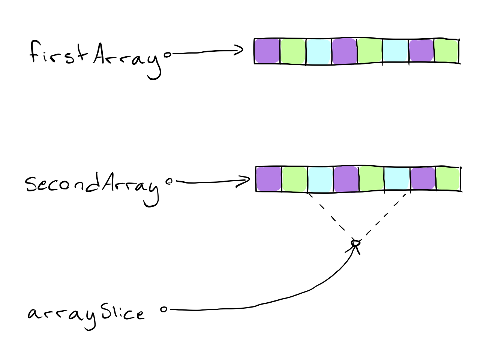

今天的文章受到一个开发中遇到的问题启发，这个问题是在解决一个 iOS 项目界面问题的时候出现的。App 要展示包含在非常多数据中的数十条，并且需要支持水平滚动，这意味着我们需要根据用户的滚动不停更新界面。
取决于用户想要展示的数据量，直接操作数据很快变得非常笨重并且在拷贝数据时要消耗非常多的资源。这时 ArraySlice 就派上用场了。
到公众号【iOS开发栈】学习更多Swift、SwiftUI、iOS开发相关内容。
什么是 ArraySlice
ArraySlice 是一个行为上和 array 非常相似的范型结构体。它支持 array 的几乎所有功能，因此对它的操作非常熟悉。
ArraySlice 的特色是它可以非常快速、高效地操作一个已经申请过内存的数组。就像这样：

如你所见，两个数组分别申请了自己的内存，并且分别保存了各自的元素，虽然这些元素可能是相同的（这个例子忽略了编译器优化，比如 Copy-On-Write，这个技术可以让我们利用同一块内存得到两个数组）。
与此同时，ArraySlice可以引用数组的一部分并把它当成自己的，这样做就高效的消除了复制值带来的开销。这种做法取决于你是通过引用数组来创建 slice 的。ArraySlice也可以申请自己的内存，而不是通过引用数组的，但是这样做就失去了使用 slice 的意义。
在我们深入代码之前，首先要意识到一个 ArraySlice 会增加对应数组的引用计数。正因为这样，你千万不能对 slice 持有时间过长，因为这样做会使对应 array 的内存无法释放。
怎么使用 ArraySlice
好问题！正如我在上面提到的 ArraySlice 拥有很多和 array 相同的方法，因此对 ArraySlice 的操作是非常熟悉的。
我们从创建 ArraySlice 开始，它会引用一个拥有 5 个元素数组中的中间 3 个元素。有好几个方法可以做到这个，但是我个人更倾向于这样做：
var array = [1, 2, 3, 4, 5]
let slice = array[1...3]
print(slice)
// Prints [2, 3, 4]
现在我们得到了一个 ArraySlice 的实例。记住，它并没有创建对 2、3 和 4 的拷贝，它只是借用了 array 变量内存的一部分。
让我们看一下我们是否可以使用新创建的 slice 变量，从计算 slice 中所有元素的和开始：
let sum = slice.reduce(0, +)
print(sum)
// Prints 9
这没有什么问题。那获取 slice 的最大值呢？
let max = slice.max()
print(max)
// Prints Optional(4)
这也没问题！.max() 方法返回一个可选值，array 中有可能不包含最大值。
那怎么一个个的打印 slice 中的元素呢？
for index in 0..< slice.count {
print(slice[index])
}
// Fatal error: Index out of the bounds
我去，这是怎么回事？
这是一个 ArraySlice 中非常有意思的细节。由于 slice 引用的是一个数组的内存空间，slice 的索引也使用了 array 的索引。因此 slice 的索引并不是从 0 到 2 的，而是从 1 到 3！
那么怎么解决这个问题呢？
我们使用一个适用于每一个可以被下标实例的技术，ArraySlice类包含两个叫做 .startIndex 和 .endIndex 的属性，这两个属性用于访问 slice 开始和结束偏移量。这些与我们引用的 array 实例中元素的范围相匹配。像这样修改代码：
for index in slice.startIndex ..< slice.endIndex {
print(slice[index])
}
// Prints 2 3 4
… 问题解决！另外需要注意的是，.endIndex属性指的是紧跟 array 结尾的下一个元素，也就是说如果你包含这个元素那就会导致 Index Out Of Bounds 的错误。因此，在这里应该使用半开区间操作符（..<）。
到公众号【iOS开发栈】学习更多Swift、SwiftUI、iOS开发相关内容。